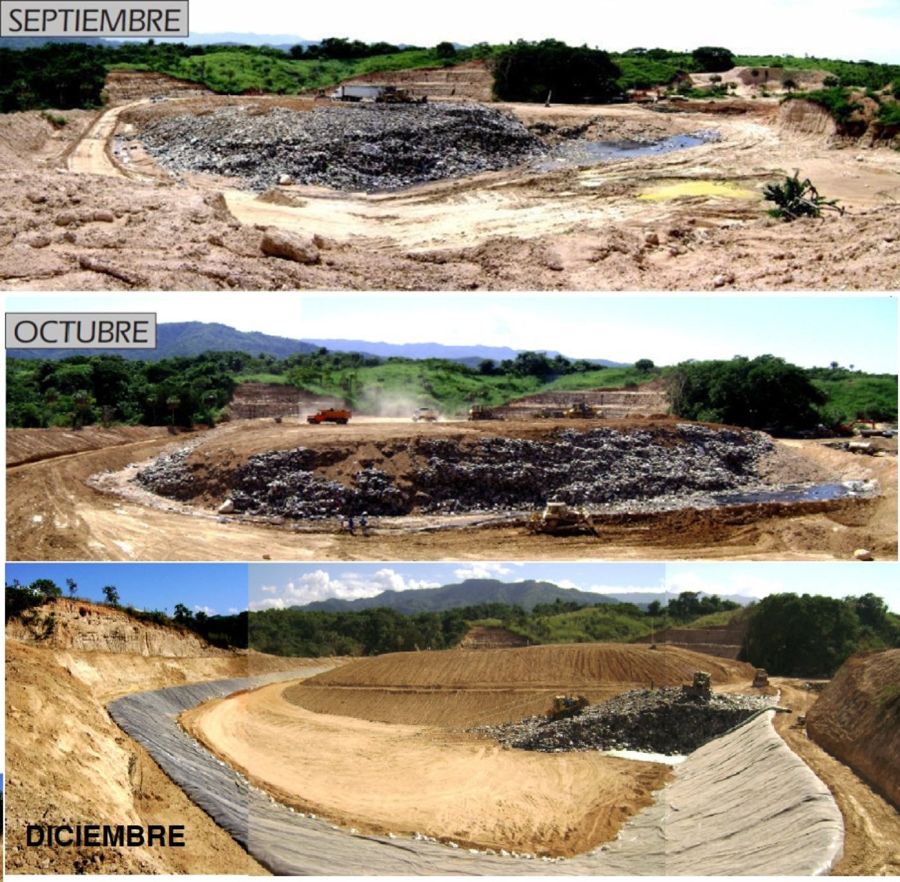
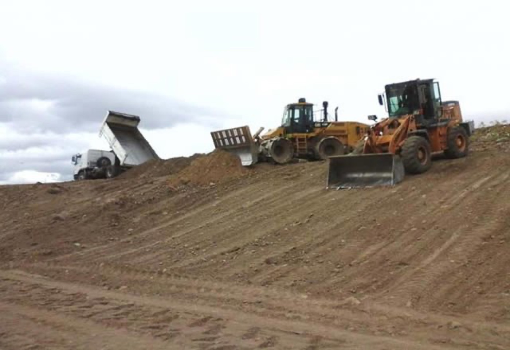
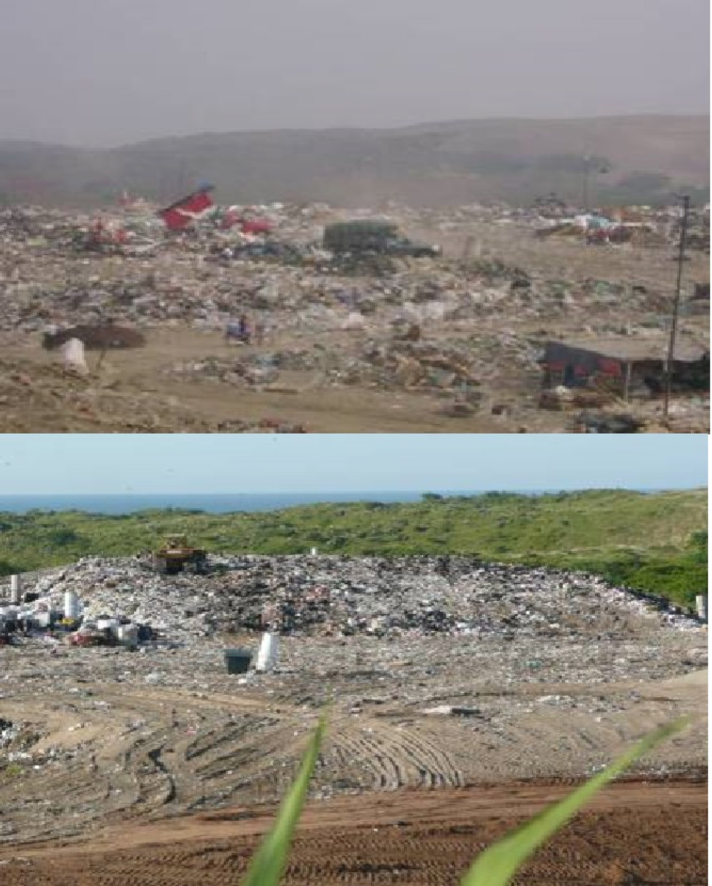

Operando
Tipo A–D
Relleno sanitario · Proyecto ejecutivo
Diseño de rellenos sanitarios
Diseño ejecutivo integral de rellenos sanitarios tipo A, B, C y D, según la clasificación de la NOM-083.
Fotografía real de obra, del archivo de Gestión Natura.
Alcance real
Del archivo técnico de Gestión Natura: cada número es un sitio real donde hemos trabajado, del corredor Coatzacoalcos–Minatitlán hasta la zona centro de Veracruz.
PE = Proyecto Ejecutivo · MIA = Manifiesto de Impacto Ambiental · RS = Residuos Sólidos
Galería
Impermeabilización de celda de relleno sanitario.

Colocación de geomembrana con personal en campo.

Movimiento de tierras y preparación de la celda.

Escala real de una celda de disposición final en operación.

Mismo sitio, tres meses de avance: de la excavación a la celda impermeabilizada.

Geomembrana anclada en todo el perímetro de la celda.

Descarga y compactación de material de cobertura.

El resultado de una intervención de saneamiento.
Impacto real
Arrastra el control para comparar un sitio en conformación de terreno y una celda ya impermeabilizada con geomembrana.
Lo que hacemos
Diseño ejecutivo integral de rellenos sanitarios tipo A, B, C y D, según la clasificación de la NOM-083.
Saneamiento y clausura técnica de basureros municipales, con recuperación del entorno.
Con quién trabajamos
Nuestros clientes son principalmente estos tres perfiles. Mientras integramos logos reales autorizados, presentamos los tipos de cliente que atendemos.
Industria, desarrollos e ingeniería civil.
Servicios públicos y disposición final municipal.
Agua, saneamiento y residuos.
Trámites y estudios particulares.
Cuéntanos los detalles y te decimos cómo podemos ayudarte a llevarlo a buen término.